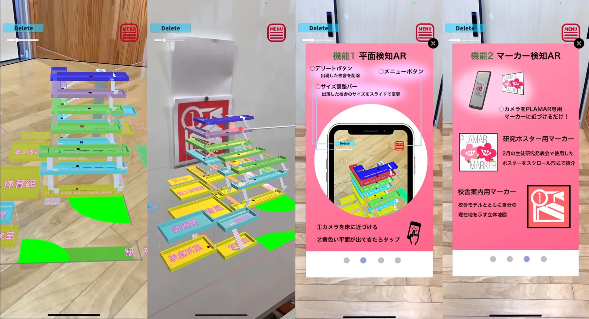
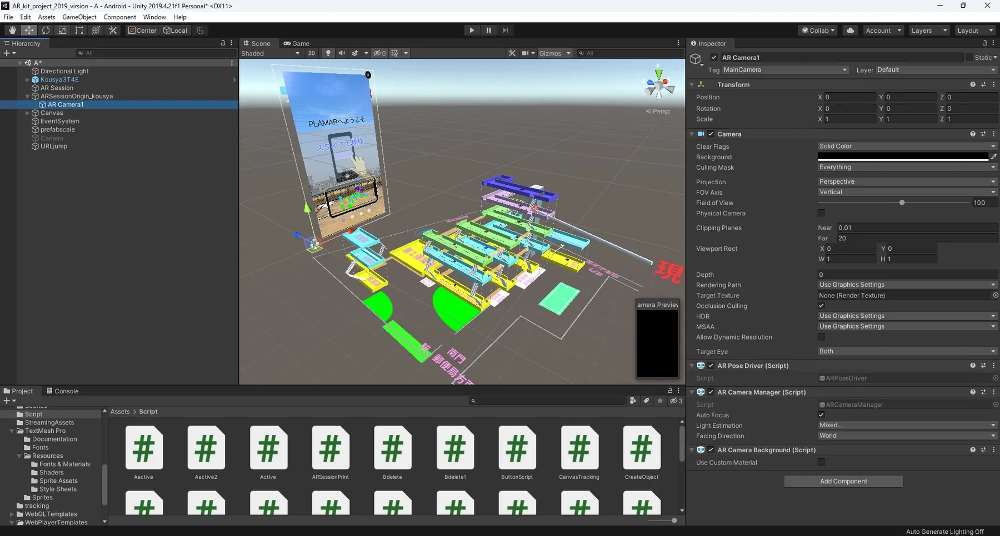

はじまり
校内の平面地図だけでは、階をまたぐ場所の関係がつかみにくい。高校の課題研究でその困りごとに着目し、校舎の3Dモデルを現実の空間に重ねて見られるアプリを発案しました。友人と2人でUnityによる開発を進めました。
試した二つの置き方
画像マーカーから表示する
特定の画像をカメラで認識し、その位置を基準に校舎の3Dモデルを表示。ポスターのデータをARで見せる使い方も試しました。
床を見つけて表示する
AR Foundationの平面検知を使い、床面に地図を置く方法も実装。縮尺の変更や削除をできるようにし、場所に合わせて確認できるようにしました。
今につながること
実機では環境光や検知精度によって表示がずれることがあり、リセット操作を加えるなどして対応しました。現実の空間とデジタルの形を合わせる難しさと面白さを知った、今の制作の出発点です。
制作の記録
